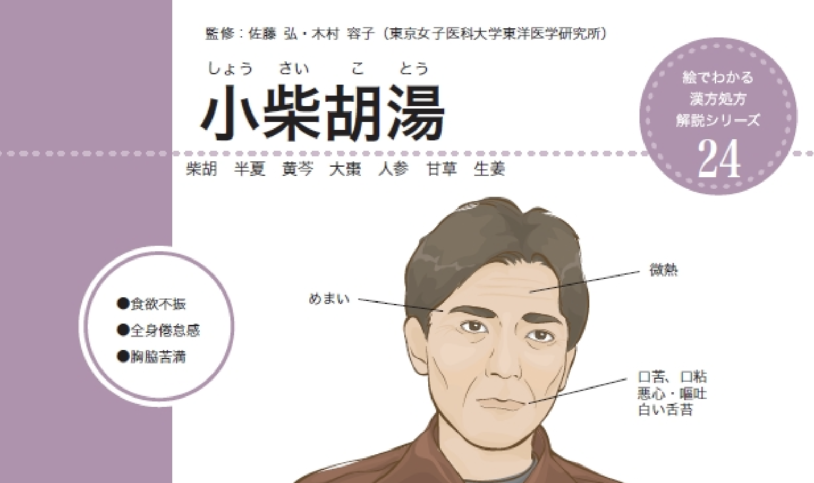

The Sho-saiko-to Event
A Cautionary Tale in Herbal Medicine
The story of Sho-saiko-to serves as a critical lesson on the intersection of traditional herbalism and modern medicine. It highlights how applying an ancient remedy based solely on a modern biomedical diagnosis, without its traditional diagnostic framework, can lead to severe and unintended consequences.
The Rise of a Popular Remedy
Sho-saiko-to, a cornerstone formula in Japanese Kampo medicine, is known by various names across Asia:
- China: Xiao-Chai-Hu-Tang (小柴胡湯)
- Korea: Sosihotang (소시호탕)
- Hong Kong: Siu-caai-wu-tong
In Japan, where traditional Kampo medicine is prescribed exclusively by medical doctors, Sho-saiko-to gained significant traction. This difference in focus is clearly visible in academic output compared to China, as shown in a PubMed search from February 2025:
PubMed Search Results (Feb 2025)
"shosaikoto" vs "xiaochaihutang"
"sho saiko to" vs "xiao chai hu tang"
Fueled by this interest, numerous clinical trials showed its potential to protect against the development of hepatocellular carcinoma in patients with cirrhosis and improve overall liver function. Based on this promising research, the Japanese Ministry of Health and Welfare officially approved Sho-saiko-to in 1994 for enhancing liver health, adding it to the national formulary. This endorsement led to its widespread use for all types of hepatitis and liver cirrhosis.
At its peak, an estimated 1.5 million hepatitis patients in Japan were being treated long-term with this traditional formula.
The 1996 Crisis: The "Sho-saiko-to Event"
The widespread, long-term prescription of the formula soon revealed a dark side. In March 1996, a major health crisis emerged and was quickly brought to light by the media.
It was reported that 88 hepatitis patients had developed severe interstitial pneumonitis after taking Sho-saiko-to. Tragically, 10 of these patients died from acute respiratory failure. This incident became known as the "Sho-saiko-to Event" and prompted urgent action and information dissemination by Japanese health authorities.
⚠️ Official Contraindications
Following the crisis, Japanese pharmaceutical companies issued strict contraindications for Sho-saiko-to to ensure patient safety.
- Drug Interaction: Patients receiving treatment with interferon preparations.
- High-Risk Patients: Patients with liver cirrhosis or hepatoma, as interstitial pneumonia may occur and lead to fatal outcomes.
- Pre-existing Conditions: Patients with chronic hepatitis showing liver dysfunction and a platelet count of 100,000/mm³ or below (as liver cirrhosis is suspected).
The Diagnostic Nuance: Why Did It Happen?
The core issue was a fundamental mismatch in application. The formula was prescribed based on the Western diagnosis of "hepatitis," rather than the traditional Asian medicine framework of pattern differentiation (syndrome differentiation). Sho-saiko-to is not for all liver conditions; it is specifically for a Ban Biao Ban Li (半表半裏), or "half-exterior, half-interior," pattern.
Formulaic and Diagnostic Clues
Traditional texts offer specific clues for using this formula, which were largely overlooked during its widespread prescription:
- ●Ginseng (Ren Shen): The original formula by Zhang Zhongjing used milder Chinese ginseng to harmonize the "Middle Jiao" (digestive center). Later modifications using stronger, warmer Korean ginseng may have contributed to heat-related issues.
- ●Tongue Coating: The classic indication is a thin white tongue coating. However, a thin yellow coating can also be appropriate, as it indicates the pathogen is still in the "half-exterior, half-interior" stage.
- ●Pulse: While not a rigid rule, the pulse can be rapid.
A Tale of Two Interpretations: Japan vs. China
The understanding and use of the formula differ significantly between Japan and China, which leads to different clinical approaches.
China's Interpretation
They used the prescription following the traditional concepts of Ban Biao Ban Li or Harmonization. This led to an application focused on traditional pattern diagnosis.
Japan's Interpretation
They used the prescription following Western medical concepts like hepatitis, cirrhosis, or liver function recovery. This led to the neglect of the basic principles of TCM, Li-Fa-Fang-Yao.